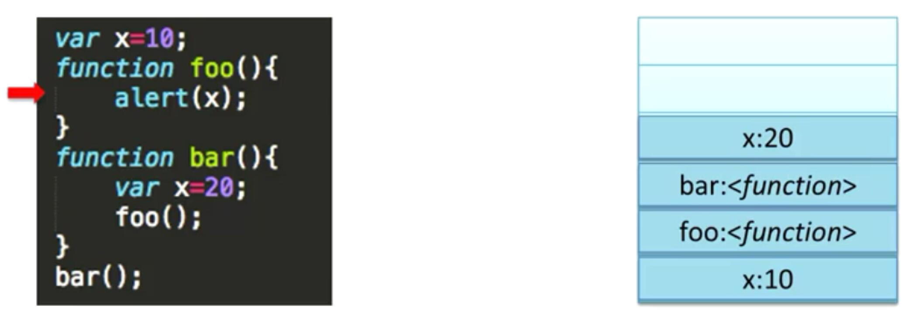
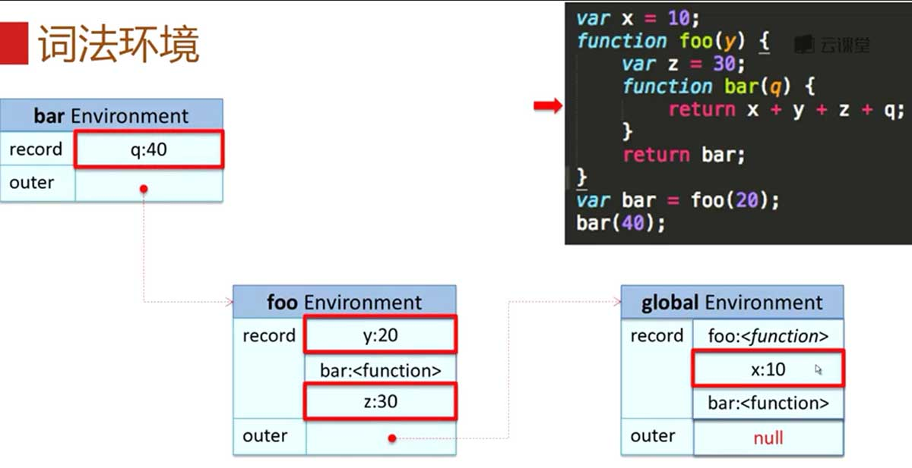

前端常见技术点 - JavaScript
这里总结一下 Web 前端面试 JavaScript 部分的常见面试问题，同时这些问题也是对一些基础的技术概念和思想的理解。对这些基本知识的掌握程度和深度决定了你的技术层级。高级工程师是必须掌握本文列出的这些知识的，资深工程师则要对这些基本概念的纵向深度进行挖掘，【问题解答全部原创，转载请注明来源】。
JavaScript 技术部分：
1. JS 有几种类型的值？
“堆”保存原始数据类型，“栈”保存引用数据类型。Stack 为自动分配的内存空间，它由系统自动释放；而 Heap 则是动态分配的内存，大小不定也不会自动释放。
- 基本类型：存放在栈内存中的简单数据段，数据大小确定，内存空间大小可以分配。
- 引用类型：存放在堆内存中的对象，变量实际保存的是一个指针，这个指针指向另一个位置。每个空间大小不一样，要根据情况开进行特定的分配。
5种基本数据类型有 undefined、null、boolean、number 和 string，它们是直接按值存放的，所以可以直接访问。
当我们需要访问引用类型（对象、数组、函数）的值时，首先需要从栈中获得该对象的地址指针，然后再从堆内存中取得所需的数据。
2. JS 如何实现继承？
构造函数使用 call、apply 继承 prototype 原型模式。
Cat.prototype = new Animal();
Cat.prototype.constructor = Cat;
var cat1 = new Cat("大毛", "黄色");
alert(cat1.species); // 动物；
3. Object.create 的核心原理？
创建一个指定原型链的对象。
// polyfill；
function object(o) {
function F() {}
F.prototype = o;
return new F();
}
4. call、apply 和 ES5 中的 bind 的本质以及常用场景？
call、apply 和 bind 的目的是为了动态改变 this，也就是改变函数的运行时上下文；
将伪数组改变为数组：
Array.prototype.slice.apply(document.getElementsByClassName("content"), [1,2]);
Array.prototype.slice.apply(arguments);
bind 方法的 polyfill：
if (!(function() {}.bind)) {
Function.prototype.bind = function(context) {
var self = this, args = Array.prototype.slice.call(arguments);
return function() {
// bind 第一个参数是 context，后面为参数；
return self.apply(context, args.slice(1));
}
};
}
5. [“1”, “2”, “3”].map(parseInt) 语句的结果是什么？
“[1, NaN, NaN]”；因为 map 函数的 callback 函数最多能够接受三个参数，第一个是当前数组元素，第二个是当前数组元素的索引，第三个为整个数组；而 parseInt 则可以接受两个参数，所以 [parseInt(1, 0), parseInt(2, 1), parseInt(3, 2)] 就变成了 [1 ,NaN, NaN]。
6. JS 中有一个函数，执行对象查找时永远不会去查找原型，该函数是？
“hasOwnProperty”。
7. JS 如何在低版本浏览器解析 JSON 格式，并防止 JSON 劫持？
在服务器返回的 JSON 字符串前加入 “{}&&” 可以防止 JSON 劫持。
eval("({}&&" + '{"result":true,"data":[{"id":"201"},{"id":"188"},{"id":"126"}]}' + ")");
8. 页面编码和被请求的资源编码如果不一致如何处理？
为外部引入的 JS 文件加入 charset 属性。
<script type="text/javascript" src="myscripts.js" charset="UTF-8">
9. JS 异步延迟加载的方式有哪些？
// 放置在标签前(接近 HTML 文件底部)；
function downloadJSAtOnload() {
var e = document.createElement("script");
e.src = "defer.js";
document.body.appendChild(e);
}
if (window.addEventListener)
window.addEventListener("load", downloadJSAtOnload, false);
else if (window.attachEvent)
window.attachEvent("onload", downloadJSAtOnload);
else
window.onload = downloadJSAtOnload;
10. new 操作符具体干了什么？
var person = {};
person.__proto__ = Person.prototype;
Person.call(person);
11. window.event.srcElement 与 window.event.target 的区别？
IE 浏览器支持 window.event.srcElement，而 Firefox 则支持 window.event.target。
12. 数组和对象有哪些原生方法，列举一下？
- Array.prototype.slice；
- Array.prototype.sort；
- Object.prototype.toString；
- Object.prototype.hasOwnProperty；
13. documen.write 和 innerHTML 的区别？
document.write 直接把内容写入文档流，会清空当前文档的所有内容；而 innerHTML 只会更新所属元素。
14. 跨域问题：
JSONP：
利用 <script \> 标签的 url 参数指定需要返回处理的 callback，服务器直接以调用 callback 函数的方式，将需要的 JSON 数据直接作为函数参数，动态生成所需的 JS 文件并在客户端加载；
CORS 跨域资源共享：
- 简单请求：浏览器附带 Origin 字段，服务器检查请求，成功则返回 Access-Control-Allow-Origin 字段；
- 非简单请求：初次请求进行预检，浏览器发送 OPTIONS 请求，Access-Control-Max-Age 字段决定此次预检的有效期；
- 如果需要发送 cookie，则 Access-Control-Allow-Origin 字段便不能设为星号，必须指定明确的、与请求网页源一致的域名；
HTML5 postMessage：
适用于多窗口间的消息传递，如：页面与内部 iframe 之间的消息传递。
- 其他页面发送：
window.postMessage(message, targetOrigin);（这里的 window 为对目标窗口的引用）。 - 当前页面监听：
window.addEventListener("message", function(event) { ... }, false);
15. 如何判断当前脚本运行在浏览器还是 Node.js 环境中？
判断当前环境是否有 global 对象（不绝对，可以伪造）；
16. Object.prototype.valueOf 和 Object.prototype.toString 的区别？
- valueOf：返回最适合该对象类型的原始值；
- toString：将该对象的原始值以字符串形式返回；
在数值运算里，会优先调用 valueOf；在字符串运算里，会优先调用 toString；
17. AMD、CMD 与 CommonJS 规范的区别？
AMD（Modules/Asynchronous-Definition）、CMD（Common Module Definition）。
AMD 是 RequireJS 在推广过程中对模块定义的规范化产出。CMD 是 SeaJS 在推广过程中对模块定义的规范化产出。AMD 是提前执行，CMD 是延迟执行。CMD 推崇依赖就近，AMD 推崇依赖前置。
- CommonJs：{模块引用(require)} {模块定义(exports)} {模块标识(module)};（Node）
- AMD：define([“dep1”, “dep2”],function(dep1, dep2){…});（RequireJS）
- CMD：define(function(require, exports, module){…});（SeaJS）
18. 移动端最小触控区域是多大？
Android 的最小点击区域尺寸是 “48x48dp”。
19. 事件捕获和冒泡？
先从外到内进行捕获事件，再从内到外进行冒泡事件。
- 事件捕获：当你使用事件捕获时，父级元素先触发，子级元素后触发；
- 事件冒泡：当你使用事件冒泡时，子级元素先触发，父级元素后触发；
20. 哪些操作会造成内存泄漏？
（暂无答案）
21. 柯里化 currying：
把接受多个参数的函数变换成接受一个单一参数（最初函数的第一个参数）的并且返回一个接受余下的参数而且返回结果的新函数；给函数分步传递参数，每次函数接受部分参数后应用这些参数，并返回一个函数接受剩下的参数，这中间可嵌套多层这样的接受部分参数的函数，直至返回最后结果。
22. escape、encodeURI 与 encodeURIComponent 的区别？
escape 除了 ASCII 字母，数字和特定的符号（- _ . ! ~ * “ ( )）外，对传进来的字符串全部进行转义编码。而 encodeURI 用于编码整个 URI，因为 URI 中的合法字符都不会被编码转换。encodeURIComponent 方法在编码单个 URIComponent 应当是最常用的，它可以将参数中的中文. 特殊字符进行转义，而不会影响整个 URL。
23. 静态作用域和动态作用域：
静态作用域：又称词法作用域，按照作用域链来分析，是 JS 使用的作用域管理方式；在编译阶段就分析出环境中的变量引用。
动态作用域：维护一个统一的作用域栈；在程序运行时才会分析出各个变量的引用。

24. 词法环境与作用域链：
词法环境是在语句或者函数运行前就初始化好的，每一个词法环境都有一个指向上一次作用域的 outer 指针，词法环境的内部变量的赋值是在语句运行时进行的。在一个函数内一条语句用到的变量会沿着词法环境作用域链逐层向上寻找。
优先级：函数定义 > 形参 > 变量定义。

函数定义和函数表达式在词法作用域的区别：函数定义在程序运行前做静态分析时就已经被放到作用域链中了，而函数表达式（IIFE 的匿名函数也是一种函数表达式）同变量定义一样，只有在运行到它之前才会开始分析作用域，并放到整个作用域链当中。

闭包：具体原理如下图所示。
25. XMLHttpRequest Level 2：
IE 时代的 “XMLHttpRequest1.0” 存在的问题：
- 只支持文本数据的传输，不支持二进制数据；
- 无法独立跨域；
- 传送数据时没有进度信息；
XMLHttpRequest Level 2 支持的特性：
- 可以设置HTTP请求的时限；
- 可以使用 FormData 对象管理表单数据；
- 可以上传文件；
- 可以请求不同域名下的数据（跨域请求）；
- 可以获取服务器端的二进制数据；
- 可以获得数据传输的进度信息；
评论 | Comments